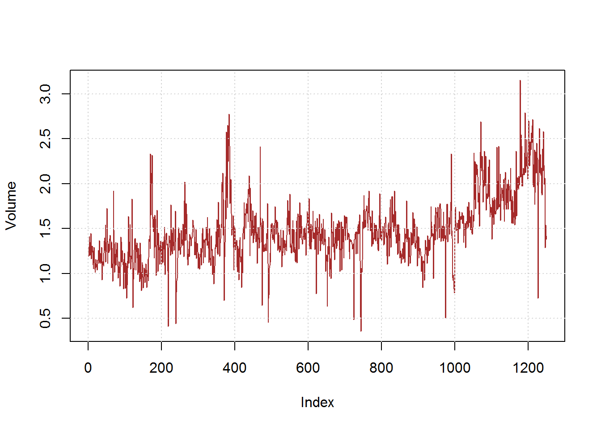
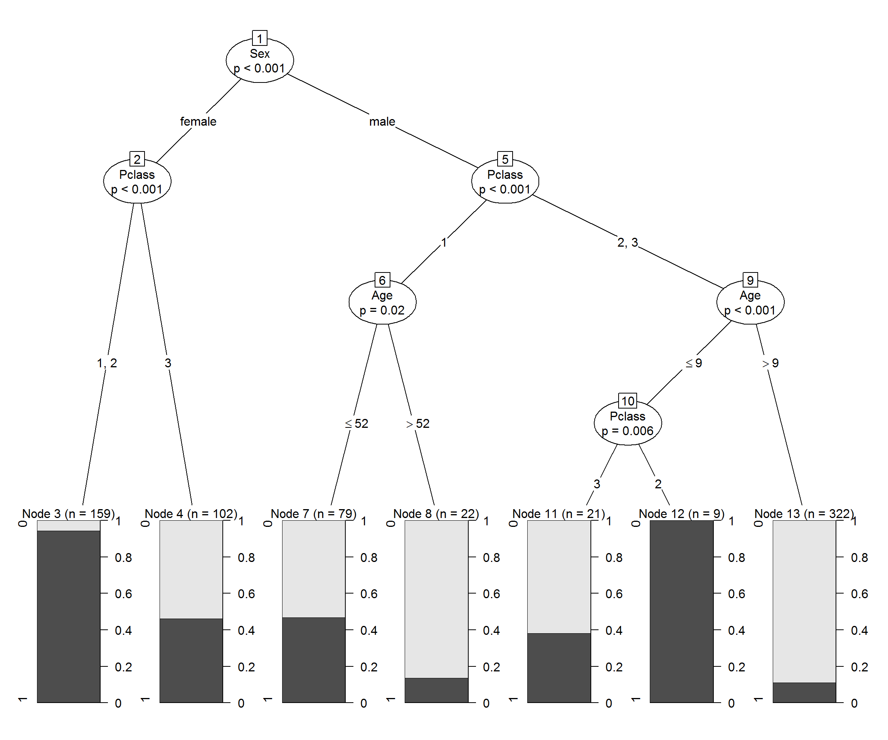
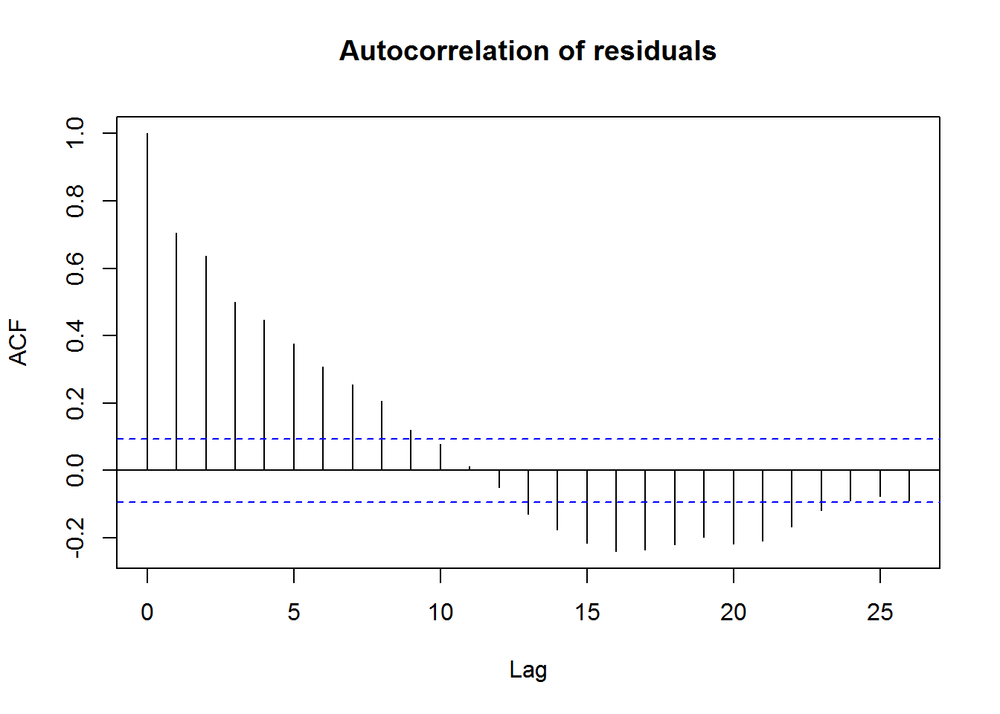
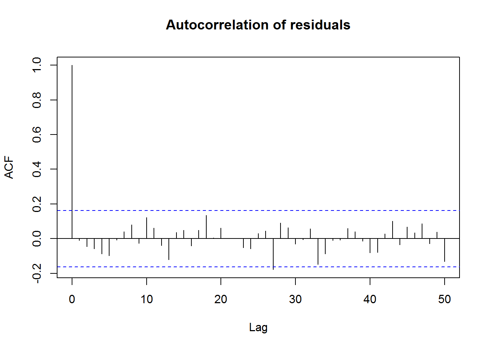

Day 3: Miscellaneous Topics
Markus Loecher, Berlin School of Economics and Law
1 Logistic Regression with the Stock Market Data
library(ISLR)
names(Smarket)## [1] "Year" "Lag1" "Lag2" "Lag3" "Lag4" "Lag5"
## [7] "Volume" "Today" "Direction"#dim(Smarket)
#summary(Smarket)
#pairs(Smarket)
#cor(Smarket)
#cor(Smarket[,-9])
attach(Smarket)
plot(Volume, type="l", col = "brown");grid()
we will fit a logistic regression model in order to predict Direction using Lag1 through Lag5 and Volume.
But we need to be careful: the training error rate is often overly optimistic-it tends to underestimate the test error rate. In order to better assess the accuracy of the logistic regression model in this setting, we can fit the model using part of the data, and then examine how well it predicts the held out data. This will yield a more realistic error rate, in the sense that in practice we will be interested in our model’s performance not on the data that we used to fit the model, but rather on days in the future for which the market’s movements are unknown.
To implement this strategy, we will first create a vector corresponding to the observations from 2001 through 2004. We will then use this vector to create a held out data set of observations from 2005.
train=(Year<2005)
Smarket.2005=Smarket[!train,]
dim(Smarket.2005)## [1] 252 9Direction.2005=Direction[!train]The object train is a vector of 1, 250 elements, corresponding to the observations in our data set. The elements of the vector that correspond to observations that occurred before 2005 are set to TRUE, whereas those that correspond to observations in 2005 are set to FALSE. The object train is a Boolean vector, since its elements are TRUE and FALSE.
We now fit a logistic regression model using only the subset of the observations that correspond to dates before 2005, using the subset argument. We then obtain predicted probabilities of the stock market going up for each of the days in our test set-that is, for the days in 2005.
glm.fit=glm(Direction~Lag1+Lag2+Lag3+Lag4+Lag5+Volume,data=Smarket,family=binomial,subset=train)
glm.probs=predict(glm.fit,Smarket.2005,type="response")Notice that we have trained and tested our model on two completely separate data sets: training was performed using only the dates before 2005, and testing was performed using only the dates in 2005. Finally, we compute the predictions for 2005 and compare them to the actual movements of the market over that time period.
glm.pred=rep("Down",252)
glm.pred[glm.probs>.5]="Up"
table(glm.pred,Direction.2005)## Direction.2005
## glm.pred Down Up
## Down 77 97
## Up 34 44mean(glm.pred==Direction.2005)## [1] 0.4801587mean(glm.pred!=Direction.2005)## [1] 0.5198413The != notation means not equal to, and so the last command computes the test set error rate. The results are rather disappointing: the test error rate is 52 %, which is worse than random guessing! Of course this result is not all that surprising, given that one would not generally expect to be able to use previous days’ returns to predict future market performance. (After all, if it were possible to do so, then the authors of this book would be out striking it rich rather than writing a statistics textbook.)
We recall that the logistic regression model had very underwhelming pvalues associated with all of the predictors, and that the smallest p-value, though not very small, corresponded to Lag1. Perhaps by removing the variables that appear not to be helpful in predicting Direction, we can obtain a more effective model. After all, using predictors that have no relationship with the response tends to cause a deterioration in the test error rate (since such predictors cause an increase in variance without a corresponding decrease in bias), and so removing such predictors may in turn yield an improvement. Below we have refit the logistic regression using just Lag1 and Lag2, which seemed to have the highest predictive power in the original logistic regression model.
glm.fit=glm(Direction~Lag1+Lag2,data=Smarket,family=binomial,subset=train)
glm.probs=predict(glm.fit,Smarket.2005,type="response")
glm.pred=rep("Down",252)
glm.pred[glm.probs>.5]="Up"
table(glm.pred,Direction.2005)## Direction.2005
## glm.pred Down Up
## Down 35 35
## Up 76 106mean(glm.pred==Direction.2005)## [1] 0.5595238106/(106+76)## [1] 0.5824176predict(glm.fit,newdata=data.frame(Lag1=c(1.2,1.5),Lag2=c(1.1,-0.8)),type="response")## 1 2
## 0.4791462 0.4960939Now the results appear to be a little better: 56% of the daily movements have been correctly predicted. It is worth noting that in this case, a much simpler strategy of predicting that the market will increase every day will also be correct 56% of the time! Hence, in terms of overall error rate, the logistic regression method is no better than the naive approach. However, the confusion matrix shows that on days when logistic regression predicts an increase in the market, it has a 58% accuracy rate. This suggests a possible trading strategy of buying on days when the model predicts an increasing market, and avoiding trades on days when a decrease is predicted. Of course one would need to investigate more carefully whether this small improvement was real or just due to random chance.
2 Classificaton Trees
2.0.1 Titanic data
Building a tree on the Titanic survival data:
train <- read.csv("data/TitanicTrain.csv")
library(partykit, quietly = TRUE)
train$Pclass = factor(train$Pclass)
train$Survived = factor(train$Survived)
naRows = is.na(train$Age)
fit = ctree(Survived ~ Age + Sex + Pclass, data= train[!naRows,])
plot(fit)
Why does the tree not split on passenger class 1 and 2 for female passengers ?
FemalePclass12 = subset(train[!naRows,], Sex =="female" & Pclass %in% 1:2)
(ST=table(FemalePclass12$Survived, FemalePclass12$Pclass))##
## 1 2 3
## 0 3 6 0
## 1 82 68 0x=ST["1",1:2]
n=colSums(ST[,1:2])
prop.test(x,n)## Warning in prop.test(x, n): Chi-squared approximation may be incorrect##
## 2-sample test for equality of proportions with continuity
## correction
##
## data: x out of n
## X-squared = 0.814, df = 1, p-value = 0.3669
## alternative hypothesis: two.sided
## 95 percent confidence interval:
## -0.04038138 0.13195530
## sample estimates:
## prop 1 prop 2
## 0.9647059 0.9189189Why does the tree not split on male passengers older than 9 years and classes 2 and 3
MalePclass23 = subset(train[!naRows,], Sex =="male" & Pclass %in% 2:3 & Age > 9)
(ST=table(MalePclass23$Survived, MalePclass23$Pclass))##
## 1 2 3
## 0 0 84 202
## 1 0 6 30x=ST["1",2:3]
n=colSums(ST[,2:3])
prop.test(x,n)##
## 2-sample test for equality of proportions with continuity
## correction
##
## data: x out of n
## X-squared = 1.9705, df = 1, p-value = 0.1604
## alternative hypothesis: two.sided
## 95 percent confidence interval:
## -0.13758592 0.01229856
## sample estimates:
## prop 1 prop 2
## 0.06666667 0.12931034Somewhat hard to believe that we find a statistically significant difference in survival probability among 1st class males that are above and below age 52 !?:
MalePclass1 = subset(train[!naRows,], Sex =="male" & Pclass %in% 1 )
(ST=table(MalePclass1$Survived, MalePclass1$Age > 52))##
## FALSE TRUE
## 0 42 19
## 1 37 3x=ST["1",]
n=colSums(ST)
prop.test(x,n)##
## 2-sample test for equality of proportions with continuity
## correction
##
## data: x out of n
## X-squared = 6.602, df = 1, p-value = 0.01019
## alternative hypothesis: two.sided
## 95 percent confidence interval:
## 0.1221815 0.5418001
## sample estimates:
## prop 1 prop 2
## 0.4683544 0.1363636Why is our p-value (0.01) less than the one reported by ctree (0.02) ?
k=2
p=0.01019
1 - (1 - p)^k## [1] 0.020276163 Time series
Recall the we temperatures for the period 1970-2005.
Global <- scan("data/global.dat")
Global.ts <- ts(Global, st = c(1856, 1), end = c(2005, 12),
fr = 12)
Global.annual <- aggregate(Global.ts, FUN = mean)
plot(Global.ts);grid()
3.0.1 Interactive Data Exploration
library(dygraphs)
dygraph(Global.ts) %>% dyRangeSelector() The following regression model is fitted to the global temperature over this period, and approximate 95% confidence intervals are given for the parameters using confint. The explanatory variable is the time, so the function time is used to extract the `times from the ts temperature object.
Last35 <- window(Global.ts, start=c(1970, 1), end=c(2005, 12))
Last35Yrs <- time(Last35)
fitAD=lm(Last35 ~ Last35Yrs)
summary(fitAD)##
## Call:
## lm(formula = Last35 ~ Last35Yrs)
##
## Residuals:
## Min 1Q Median 3Q Max
## -0.35784 -0.08220 -0.00356 0.07738 0.47024
##
## Coefficients:
## Estimate Std. Error t value Pr(>|t|)
## (Intercept) -34.920409 1.164899 -29.98 <2e-16 ***
## Last35Yrs 0.017654 0.000586 30.13 <2e-16 ***
## ---
## Signif. codes: 0 '***' 0.001 '**' 0.01 '*' 0.05 '.' 0.1 ' ' 1
##
## Residual standard error: 0.1266 on 430 degrees of freedom
## Multiple R-squared: 0.6785, Adjusted R-squared: 0.6778
## F-statistic: 907.7 on 1 and 430 DF, p-value: < 2.2e-16plot(Last35)
abline(fitAD,col=2)
confint(fitAD)## 2.5 % 97.5 %
## (Intercept) -37.21001248 -32.63080554
## Last35Yrs 0.01650228 0.018805723.0.2 Standard Errors incorrect
The confidence interval for the slope does not contain zero, which would provide statistical evidence of an increasing trend in global temperatures if the autocorrelation in the residuals is negligible. However, the residual series is positively autocorrelated at shorter lags:
acf(resid(fitAD), main = "Autocorrelation of residuals")
, leading to an underestimate of the standard error and too narrow a confidence interval for the slope. Intuitively, the positive correlation between consecutive values reduces the effective record length because similar values will tend to occur together. The following section illustrates the reasoning behind this but may be omitted, without loss of continuity, by readers who do not require the mathematical details.
3.0.2.1 Generalised least squares
For a positive serial correlation in the residual series, this implies that the standard errors of the estimated regression parameters are likely to be underestimated, and should therefore be corrected. A fitting procedure known as generalised least squares (GLS) can be used to provide better estimates of the standard errors of the regression parameters to account for the autocorrelation in the residual series. The procedure is essentially based on maximising the likelihood given the autocorrelation in the data and is implemented in R in the gls function (within the nlme library, which you will need to load).
library(nlme)
x.gls <- gls(Last35 ~ Last35Yrs, cor = corAR1(0.7))
confint(x.gls)## 2.5 % 97.5 %
## (Intercept) -39.80571681 -28.49658850
## Last35Yrs 0.01442274 0.02011148#par(mar=c(7,3,1,1));
#pacf(fitAD$residuals,lag.max = 10)3.0.3 stochastic model
The data exhibit an increasing trend after 1970, which may be due to the greenhouse effect. Sceptics may claim that the apparent increasing trend can be dismissed as a transient stochastic phenomenon. For their claim to be consistent with the time series data, it should be possible to model the trend without the use of deterministic functions. Consider the following AR model fitted to the mean annual temperature series:
Global.ar <- ar(Global.annual, method = "mle")## Warning in arima0(x, order = c(i, 0L, 0L), include.mean = demean): possible
## convergence problem: optim gave code = 1mean(aggregate(Global.ts, FUN = mean))## [1] -0.1382628 Global.ar$ar## [1] 0.58762026 0.01260254 0.11116731 0.26763656 options(digits=3)
rbind(Global.ar$ar -2 * sqrt(diag(Global.ar$asy.var)),
Global.ar$ar,
Global.ar$ar +2 * sqrt(diag(Global.ar$asy.var)) )## [,1] [,2] [,3] [,4]
## [1,] 0.449 -0.1559 -0.0574 0.129
## [2,] 0.588 0.0126 0.1112 0.268
## [3,] 0.726 0.1812 0.2797 0.406acf(Global.ar$res[-(1:Global.ar$order)], lag = 50, main = "Autocorrelation of residuals")
Based on the output above a predicted mean annual temperature \(x_t\) at time t is given by \[ \hat{x}_t = -0.14 + 0.59(x_{t-2} + 0.14) + 0.013(x_{t-2} + 0.14) +0.11(x_{t-3} + 0.14) + 0.27(x_{t-4} + 0.14) \]
The correlogram of the residuals has only one (marginally) significant value at lag 27, so the underlying residual series could be white noise. Thus the fitted AR(4) model provides a good fit to the data. As the AR model has no deterministic trend component, the trends in the data can be explained by serial correlation and random variation, implying that it is possible that these trends are stochastic (or could arise from a purely stochastic process). Again we emphasise that this does not imply that there is no underlying reason for the trends. If a valid scientific explanation is known, such as a link with the increased use of fossil fuels, then this information would clearly need to be included in any future forecasts of the series.
4 Appendix
4.1 Leverage, Influence and Cook’s distance
4.2 Autocorrelation and the estimation of sample statistics
To illustrate the effect of autocorrelation in estimation, the sample mean will be used, as it is straightforward to analyse and is used in the calculation of other statistical properties. Suppose \(x_t : t = 1, .., n\) is a time series of independent random variables with mean \(E(x_t) = \mu\) and variance \(Var(x_t) =\sigma^2\). Then it is well known in the study of random samples that the sample mean \(\bar{x} = \sum_{t=1}^n{x_t}/n\) has mean \(E(\bar{x}) = \mu\) and variance \(Var(\bar{x}) =\sigma^2/n\)
Now let \(x_t : t = 1, .., n\) be a stationary time series with \(E(x_t) = \mu\) and variance \(Var(x_t) =\sigma^2\), and autocorrelation function \(Cor(x_t, x_{t+k}) = \rho_k\). Then the variance of the sample mean is given by
\[ Var(\bar{x}) =\frac{\sigma^2}{n} \left(1 + 2 \sum_{k=1}^{n-1}{(1-k/n) \rho_k} \right) \]
4.3 Sources
- Analysis of temperature data leans heavily on “Introductory Time Series with R”, by Cowpertwait and Metcalfe.
- Stock market regression is taken from “An Introduction to Statistical Learning”, by Gareth James, Daniela Witten, Trevor Hastie, Robert Tibshirani.